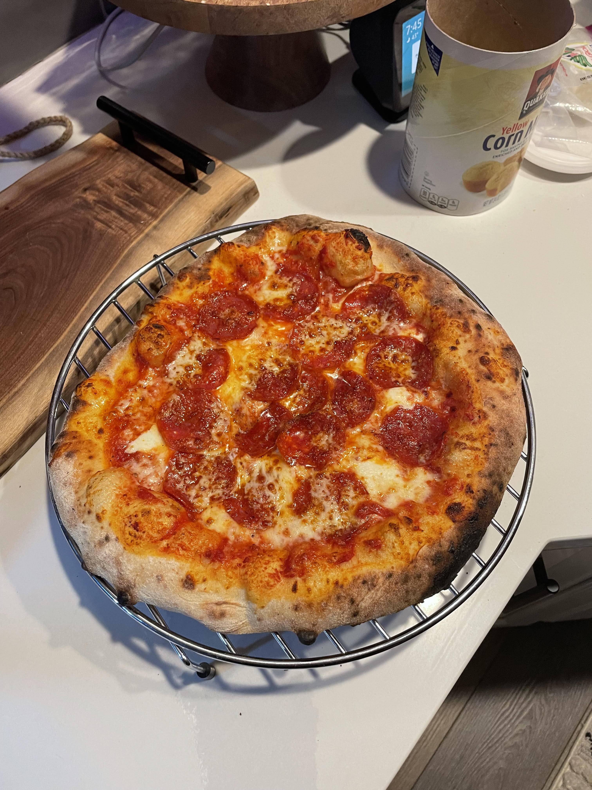

Ooni Pizza

Discription
In this recipe we will be making a classic pepperoni pizza using the Ooni Pizza Oven.
The Ooni Oven is a fun tool to make woodfired pizza at own home.
The Ooni oven reaches temperatures up to 900 degrees F.
At these temperatures your pizza can cook in 90 seconds!
Ingredients
- pizza dough
- whole canned tomatos
- garlic
- olive oil
- fresh basil
- oregano
- red pepper flakes
- tomato paste
- salt
- pepper
- pepperoni
- mozzarella cheese
- flour
- cornmeal
Steps
- Set out pizza dough to proof.
- Mince two cloves of garlic.
- Heat pan over medium heat and add olive oil.
- Add garlic and cook for 30 seconds.
- Add 1 tbsp of oregano and 1 tsp of red pepper flake. Mix.
- Add 1 tbsp of tomatoe paste and cook until raw smell is gone.
- Add can of tamatos and half a can of cold water. Scrape up any brown spots on pan with wooden spoon.
- Simmer for 20 minutes.
- While sauce simmers, preheat Ooni over to 900F.
- Once sauce is ready, flour your counter and shape dough into circle.
- Spoon sauce onto pizza to cover surface.
- Add mozzarella cheese.
- Add pepperoni.
- Sprinkle cornmeal onto your pizza peel then transfer your pizza to the peel.
- Gently shake pizza to ensure it doesn't stick to the peel.
- Launch your pizza into the Ooni.
- Rotate your pizza 2-3 times until each side is cooked but not burnt.
- Set pizza on a wire rack to cool.
- Slice and enjoy!